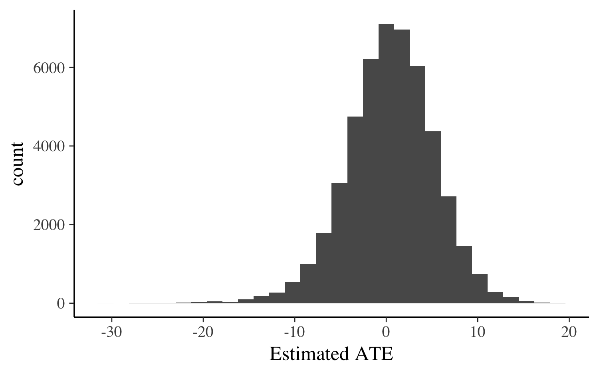
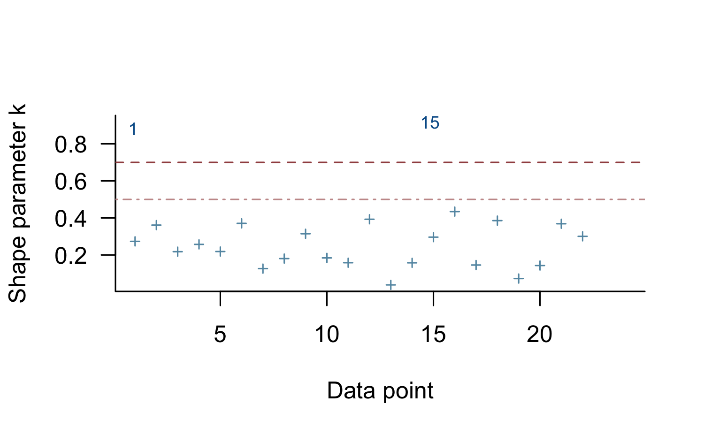

Estimating Regularized Linear Models with rstanarm
Jonah Gabry and Ben Goodrich
2025-12-03
Source:vignettes/lm.Rmd
lm.RmdIntroduction
This vignette explains how to estimate linear models using the
stan_lm function in the rstanarm
package.
The four steps of a Bayesian analysis are
- Specify a joint distribution for the outcome(s) and all the unknowns, which typically takes the form of a marginal prior distribution for the unknowns multiplied by a likelihood for the outcome(s) conditional on the unknowns. This joint distribution is proportional to a posterior distribution of the unknowns conditional on the observed data
- Draw from posterior distribution using Markov Chain Monte Carlo (MCMC).
- Evaluate how well the model fits the data and possibly revise the model.
- Draw from the posterior predictive distribution of the outcome(s) given interesting values of the predictors in order to visualize how a manipulation of a predictor affects (a function of) the outcome(s).
Steps 3 and 4 are covered in more depth by the vignette entitled “How to Use the rstanarm Package”. This vignette focuses on Step 1 when the likelihood is the product of independent normal distributions.
The goal of the rstanarm package is to make Bayesian estimation of common regression models routine. That goal can be partially accomplished by providing interfaces that are similar to the popular formula-based interfaces to frequentist estimators of those regression models. But fully accomplishing that goal sometimes entails utilizing priors that applied researchers are unaware that they prefer. These priors are intended to work well for any data that a user might pass to the interface that was generated according to the assumptions of the likelihood function.
It is important to distinguish between priors that are easy for applied researchers to specify and priors that are easy for applied researchers to conceptualize. The prior described below emphasizes the former but we outline its derivation so that applied researchers may feel more comfortable utilizing it.
Likelihood
The likelihood for one observation under a linear model can be written as a conditionally normal PDF \[\frac{1}{\sigma_{\epsilon} \sqrt{2 \pi}} e^{-\frac{1}{2} \left(\frac{y - \mu}{\sigma_{\epsilon}}\right)^2},\] where \(\mu = \alpha + \mathbf{x}^\top \boldsymbol{\beta}\) is a linear predictor and \(\sigma_{\epsilon}\) is the standard deviation of the error in predicting the outcome, \(y\). The likelihood of the entire sample is the product of \(N\) individual likelihood contributions.
It is well-known that the likelihood of the sample is maximized when the sum-of-squared residuals is minimized, which occurs when \[ \widehat{\boldsymbol{\beta}} = \left(\mathbf{X}^\top \mathbf{X}\right)^{-1} \mathbf{X}^\top \mathbf{y}, \] \[ \widehat{\alpha} = \overline{y} - \overline{\mathbf{x}}^\top \widehat{\boldsymbol{\beta}}, \] \[ \widehat{\sigma}_{\epsilon}^2 = \frac{\left(\mathbf{y} - \widehat{\alpha} - \mathbf{X} \widehat{ \boldsymbol{\beta}}\right)^\top \left(\mathbf{y} - \widehat{\alpha} - \mathbf{X} \widehat{ \boldsymbol{\beta}}\right)}{N},\] where \(\overline{\mathbf{x}}\) is a vector that contains the sample means of the \(K\) predictors, \(\mathbf{X}\) is a \(N \times K\) matrix of centered predictors, \(\mathbf{y}\) is a \(N\)-vector of outcomes and \(\overline{y}\) is the sample mean of the outcome.
QR Decomposition
The lm function in R actually performs a QR
decomposition of the design matrix, \(\mathbf{X} = \mathbf{Q}\mathbf{R}\), where
\(\mathbf{Q}^\top \mathbf{Q} =
\mathbf{I}\) and \(\mathbf{R}\)
is upper triangular. Thus, the OLS solution for the coefficients can be
written as \(\left(\mathbf{X}^\top
\mathbf{X}\right)^{-1} \mathbf{X}^\top \mathbf{y} =
\mathbf{R}^{-1} \mathbf{Q}^\top \mathbf{y}\). The
lm function utilizes the QR decomposition for numeric
stability reasons, but the QR decomposition is also useful for thinking
about priors in a Bayesian version of the linear model. In addition,
writing the likelihood in terms of \(\mathbf{Q}\) allows it to be evaluated in a
very efficient manner in Stan.
Priors
The key innovation in the stan_lm function in the
rstanarm package is the prior for the parameters in the
QR-reparameterized model. To understand this prior, think about the
equations that characterize the maximum likelihood solutions before
observing the data on \(\mathbf{X}\)
and especially \(\mathbf{y}\).
What would the prior distribution of \(\boldsymbol{\theta} = \mathbf{Q}^\top \mathbf{y}\) be? We can write its \(k\)-th element as \(\theta_k = \rho_k \sigma_Y \sqrt{N - 1}\) where \(\rho_k\) is the correlation between the \(k\)th column of \(\mathbf{Q}\) and the outcome, \(\sigma_Y\) is the standard deviation of the outcome, and \(\frac{1}{\sqrt{N-1}}\) is the standard deviation of the \(k\) column of \(\mathbf{Q}\). Then let \(\boldsymbol{\rho} = \sqrt{R^2}\mathbf{u}\) where \(\mathbf{u}\) is a unit vector that is uniformly distributed on the surface of a hypersphere. Consequently, \(R^2 = \boldsymbol{\rho}^\top \boldsymbol{\rho}\) is the familiar coefficient of determination for the linear model.
An uninformative prior on \(R^2\) would be standard uniform, which is a special case of a Beta distribution with both shape parameters equal to \(1\). A non-uniform prior on \(R^2\) is somewhat analogous to ridge regression, which is popular in data mining and produces better out-of-sample predictions than least squares because it penalizes \(\boldsymbol{\beta}^\top \boldsymbol{\beta}\), usually after standardizing the predictors. An informative prior on \(R^2\) effectively penalizes \(\boldsymbol{\rho}\top \boldsymbol{\rho}\), which encourages \(\boldsymbol{\beta} = \mathbf{R}^{-1} \boldsymbol{\theta}\) to be closer to the origin.
Lewandowski, Kurowicka, and Joe (2009) derives a distribution for a
correlation matrix that depends on a single shape parameter \(\eta > 0\), which implies the variance
of one variable given the remaining \(K\) variables is \(\mathrm{Beta}\left(\eta,\frac{K}{2}\right)\).
Thus, the \(R^2\) is distributed \(\mathrm{Beta}\left(\frac{K}{2},\eta\right)\)
and any prior information about the location of \(R^2\) can be used to choose a value of the
hyperparameter \(\eta\). The
R2(location, what) function in the
rstanarm package supports four ways of choosing \(\eta\):
-
what = "mode"andlocationis some prior mode on the \(\left(0,1\right)\) interval. This is the default but since the mode of a \(\mathrm{Beta}\left(\frac{K}{2},\eta\right)\) distribution is \(\frac{\frac{K}{2} - 1}{\frac{K}{2} + \eta - 2}\) the mode only exists if \(K > 2\). If \(K \leq 2\), then the user must specify something else forwhat. -
what = "mean"andlocationis some prior mean on the \(\left(0,1\right)\) interval, where the mean of a \(\mathrm{Beta}\left(\frac{K}{2},\eta\right)\) distribution is \(\frac{\frac{K}{2}}{\frac{K}{2} + \eta}\). -
what = "median"andlocationis some prior median on the \(\left(0,1\right)\) interval. The median of a \(\mathrm{Beta}\left(\frac{K}{2},\eta\right)\) distribution is not available in closed form but if \(K > 2\) it is approximately equal to \(\frac{\frac{K}{2} - \frac{1}{3}}{\frac{K}{2} + \eta - \frac{2}{3}}\). Regardless of whether \(K > 2\), theR2function can numerically solve for the value of \(\eta\) that is consistent with a given prior median utilizing the quantile function. -
what = "log"andlocationis some (negative) prior value for \(\mathbb{E} \ln R^2 = \psi\left(\frac{K}{2}\right)- \psi\left(\frac{K}{2}+\eta\right)\), where \(\psi\left(\cdot\right)\) is thedigammafunction. Again, given a prior value for the left-hand side it is easy to numerically solve for the corresponding value of \(\eta\).
There is no default value for the location argument of
the R2 function. This is an informative prior on
\(R^2\), which must be chosen by the
user in light of the research project. However, specifying
location = 0.5 is often safe, in which case \(\eta = \frac{K}{2}\) regardless of whether
what is "mode", "mean", or
"median". In addition, it is possible to specify
NULL, in which case a standard uniform on \(R^2\) is utilized.
We set \(\sigma_y = \omega s_y\) where \(s_y\) is the sample standard deviation of the outcome and \(\omega > 0\) is an unknown scale parameter to be estimated. The only prior for \(\omega\) that does not contravene Bayes’ theorem in this situation is Jeffreys prior, \(f\left(\omega\right) \propto \frac{1}{\omega}\), which is proportional to a Jeffreys prior on the unknown \(\sigma_y\), \(f\left(\sigma_y\right) \propto \frac{1}{\sigma_y} = \frac{1}{\omega \widehat{\sigma}_y} \propto \frac{1}{\omega}\). This parameterization and prior makes it easy for Stan to work with any continuous outcome variable, no matter what its units of measurement are.
It would seem that we need a prior for \(\sigma_{\epsilon}\), but our prior beliefs about \(\sigma_{\epsilon} = \omega s_y \sqrt{1 - R^2}\) are already implied by our prior beliefs about \(\omega\) and \(R^2\). That only leaves a prior for \(\alpha = \overline{y} - \overline{\mathbf{x}}^\top \mathbf{R}^{-1} \boldsymbol{\theta}\). The default choice is an improper uniform prior, but a normal prior can also be specified such as one with mean zero and standard deviation \(\frac{\sigma_y}{\sqrt{N}}\).
Posterior
The previous sections imply a posterior distribution for \(\omega\), \(\alpha\), \(\mathbf{u}\), and \(R^2\). The parameters of interest can then be recovered as generated quantities:
- \(\sigma_y = \omega s_y\)
- \(\sigma_{\epsilon} = \sigma_y \sqrt{1 - R^2}\)
- \(\boldsymbol{\beta} = \mathbf{R}^{-1} \mathbf{u} \sigma_y \sqrt{R^2 \left(N-1\right)}\)
The implementation actually utilizes an improper uniform prior on \(\ln \omega\). Consequently, if \(\ln \omega = 0\), then the marginal standard deviation of the outcome implied by the model is the same as the sample standard deviation of the outcome. If \(\ln \omega > 0\), then the marginal standard deviation of the outcome implied by the model exceeds the sample standard deviation, so the model overfits the data. If \(\ln \omega < 0\), then the marginal standard deviation of the outcome implied by the model is less than the sample standard deviation, so the model underfits the data or that the data-generating process is nonlinear. Given the regularizing nature of the prior on \(R^2\), a minor underfit would be considered ideal if the goal is to obtain good out-of-sample predictions. If the model badly underfits or overfits the data, then you may want to reconsider the model.
Example
We will utilize an example from the HSAUR3 package by Brian S. Everitt and Torsten Hothorn, which is used in their 2014 book A Handbook of Statistical Analyses Using R (3rd Edition) (Chapman & Hall / CRC). This book is frequentist in nature and we will show how to obtain the corresponding Bayesian results.
The model in section 5.3.1 analyzes an experiment where clouds were
seeded with different amounts of silver iodide to see if there was
increased rainfall. This effect could vary according to covariates,
which (except for time) are interacted with the treatment
variable. Most people would probably be skeptical that cloud hacking
could explain very much of the variation in rainfall and thus the prior
mode of the \(R^2\) would probably be
fairly small.
The frequentist estimator of this model can be replicated by executing
data("clouds", package = "HSAUR3")
ols <- lm(rainfall ~ seeding * (sne + cloudcover + prewetness + echomotion) +
time, data = clouds)
round(coef(ols), 3) (Intercept) seedingyes
-0.346 15.683
sne cloudcover
0.420 0.388
prewetness echomotionstationary
4.108 3.153
time seedingyes:sne
-0.045 -3.197
seedingyes:cloudcover seedingyes:prewetness
-0.486 -2.557
seedingyes:echomotionstationary
-0.562 Note that we have not looked at the estimated \(R^2\) or \(\sigma\) for the ordinary least squares
model. We can estimate a Bayesian version of this model by prepending
stan_ to the lm call, specifying a prior mode
for \(R^2\), and optionally specifying
how many cores the computer may utilize:
library(rstanarm)
post <-
stan_lm(
rainfall ~ seeding * (sne + cloudcover + prewetness + echomotion) + time,
data = clouds,
prior = R2(location = 0.2),
seed = 12345
)
poststan_lm
family: gaussian [identity]
formula: rainfall ~ seeding * (sne + cloudcover + prewetness + echomotion) +
time
observations: 24
predictors: 11
------
Median MAD_SD
(Intercept) 2.4 2.3
seedingyes 6.8 3.8
sne 0.2 0.7
cloudcover 0.2 0.2
prewetness 1.7 2.8
echomotionstationary 1.4 1.5
time 0.0 0.0
seedingyes:sne -1.4 1.0
seedingyes:cloudcover -0.2 0.2
seedingyes:prewetness -1.1 3.5
seedingyes:echomotionstationary -0.2 2.0
Auxiliary parameter(s):
Median MAD_SD
R2 0.3 0.1
log-fit_ratio 0.0 0.1
sigma 2.6 0.4
------
* For help interpreting the printed output see ?print.stanreg
* For info on the priors used see ?prior_summary.stanregIn this case, the “Bayesian point estimates”, which are represented
by the posterior medians, appear quite different from the ordinary least
squares estimates. However, the log-fit_ratio (i.e. \(\ln \omega\)) is quite small, indicating
that the model only slightly overfits the data when the prior derived
above is utilized. Thus, it would be safe to conclude that the ordinary
least squares estimator considerably overfits the data since there are
only \(24\) observations to estimate
\(12\) parameters with and no prior
information on the parameters.
Also, it is not obvious what the estimated average treatment effect
is since the treatment variable, seeding, is interacted
with four other correlated predictors. However, it is easy to estimate
or visualize the average treatment effect (ATE) using
rstanarm’s posterior_predict function.
clouds_cf <- clouds
clouds_cf$seeding[] <- "yes"
y1_rep <- posterior_predict(post, newdata = clouds_cf)
clouds_cf$seeding[] <- "no"
y0_rep <- posterior_predict(post, newdata = clouds_cf)
qplot(x = c(y1_rep - y0_rep), geom = "histogram", xlab = "Estimated ATE")
As can be seen, the treatment effect is not estimated precisely and is as almost as likely to be negative as it is to be positive.
Alternative Approach
The prior derived above works well in many situations and is quite
simple to use since it only requires the user to specify the
prior location of the \(R^2\).
Nevertheless, the implications of the prior are somewhat difficult to
conceptualize. Thus, it is perhaps worthwhile to compare to
another estimator of a linear model that simply puts independent Cauchy
priors on the regression coefficients. This simpler approach can be
executed by calling the stan_glm function with
family = gaussian() and specifying the priors:
simple <-
stan_glm(
rainfall ~ seeding * (sne + cloudcover + prewetness + echomotion) + time,
data = clouds,
family = gaussian(),
prior = cauchy(),
prior_intercept = cauchy(),
seed = 12345
)We can compare the two approaches using an approximation to
Leave-One-Out (LOO) cross-validation, which is implemented by the
loo function in the loo package.
(loo_post <- loo(post))
Computed from 4000 by 24 log-likelihood matrix.
Estimate SE
elpd_loo -60.3 5.3
p_loo 5.9 2.4
looic 120.5 10.6
------
MCSE of elpd_loo is 0.1.
MCSE and ESS estimates assume independent draws (r_eff=1).
All Pareto k estimates are good (k < 0.7).
See help('pareto-k-diagnostic') for details.
loo_compare(loo_post, loo(simple))Warning: Found 3 observation(s) with a pareto_k > 0.7. We recommend calling 'loo' again with argument 'k_threshold = 0.7' in order to calculate the ELPD without the assumption that these observations are negligible. This will refit the model 3 times to compute the ELPDs for the problematic observations directly. elpd_diff se_diff
post 0.0 0.0
simple -0.9 3.0 The results indicate that the first approach is expected to produce better out-of-sample predictions but the Warning messages are at least as important. Many of the estimated shape parameters for the Generalized Pareto distribution are above \(0.5\) in the model with Cauchy priors, which indicates that these estimates are only going to converge slowly to the true out-of-sample deviance measures. Thus, with only \(24\) observations, they should not be considered reliable. The more complicated prior derived above is stronger — as evidenced by the fact that the effective number of parameters is about half of that in the simpler approach and \(12\) for the maximum likelihood estimator — and only has a few of the \(24\) Pareto shape estimates in the “danger zone”. We might want to reexamine these observations
plot(loo_post, label_points = TRUE)
because the posterior is sensitive to them but, overall, the results seem tolerable.
In general, we would expect the joint prior derived here to work better when there are many predictors relative to the number of observations. Placing independent, heavy-tailed priors on the coefficients neither reflects the beliefs of the researcher nor conveys enough information to stabilize all the computations.
Conclusion
This vignette has discussed the prior distribution utilized in the
stan_lm function, which has the same likelihood and a
similar syntax as the lm function in R but adds the ability
to expression prior beliefs about the location of the \(R^2\), which is the familiar proportion of
variance in the outcome variable that is attributable to the predictors
under a linear model. Since the \(R^2\)
is a well-understood bounded scalar, it is easy to specify prior
information about it, whereas other Bayesian approaches require the
researcher to specify a joint prior distribution for the regression
coefficients (and the intercept and error variance).
However, most researchers have little inclination to specify all
these prior distributions thoughtfully and take a short-cut by
specifying one prior distribution that is taken to apply to all the
regression coefficients as if they were independent of each other (and
the intercept and error variance). This short-cut is available in the
stan_glm function and is described in more detail in other
rstanarm vignettes for Generalized Linear Models
(GLMs), which can be found by navigating up one level.
We are optimistic that this prior on the \(R^2\) will greatly help in accomplishing
our goal for rstanarm of making Bayesian estimation of
regression models routine. The same approach is used to specify a prior
in ANOVA models (see stan_aov) and proportional-odds models
for ordinal outcomes (see stan_polr).
Finally, the stan_biglm function can be used when the
design matrix is too large for the qr function to process.
The stan_biglm function inputs the output of the
biglm function in the biglm package, which
utilizes an incremental QR decomposition that does not require the
entire dataset to be loaded into memory simultaneously. However, the
biglm function needs to be called in a particular way in
order to work with stan_biglm. In particular, The means of
the columns of the design matrix, the sample mean of the outcome, and
the sample standard deviation of the outcome all need to be passed to
the stan_biglm function, as well as a flag indicating
whether the model really does include an intercept. Also, the number of
columns of the design matrix currently cannot exceed the number of rows.
Although stan_biglm should run fairly quickly and without
much memory, the resulting object is a fairly plain stanfit
object rather than an enhanced stanreg object like that
produced by stan_lm. Many of the enhanced capabilities of a
stanreg object depend on being able to access the full
design matrix, so doing posterior predictions, posterior checks, etc.
with the output of stan_biglm would require some custom R
code.